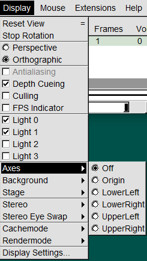
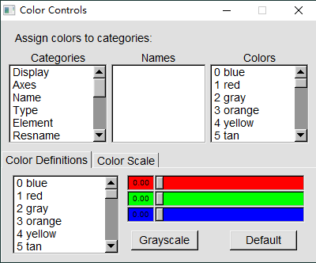
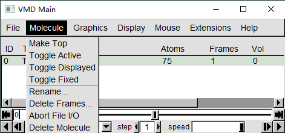
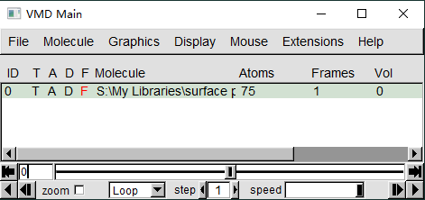
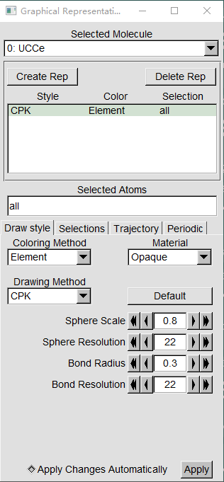

脚本基础
设定变量
1
set <variable> <value>
使用变量
1
2set x 10
puts "the value of x is:$x"打印
1
puts $<variable>
条件逻辑：
1
if {conditional} {script} elseif {conditional} {script} else {script}
比如：
1
2set a 30
if {$a <= 30} {puts "$a is seq 30"} else {puts "$a is larger than 30"}循环：
1
for {initialization} {conditional} {increment} {commands}
或
1
foreach <variable name> <list> {commands}
比如：
1
2
3
4for {set i 0} {$i < 10} {incr i 1} {puts "i is $i"}
set m {0 1 2 3 4 5}
foreach i $m {puts "two times m is [expr $i *2]"}调用脚本，在tk窗口中：
1
source <script file>
axes

locations：列出位置的列表location：获取当前的位置location <Position>：设置轴的位置，比如：off、origin、lowerleft、lowerright、upperleft、upperright：1
axes location Off
color

<Category> <Name> <color>：更改类别和名字指定的对象：category包含（具体Categories、Names和Colors可在VMD界面的Graphics→Colors中查看）：
Display：背景颜色Axes：轴相关Name：原子名称- ……
例子：
1
2
3
4
5
color Display Background white
color Name C silver
……
display
depthcue <on|off>: 景深效果，前面的物体比后面的更亮，默认开启，关闭用：1
display depthcue off
projection <mode>：投影模式mode有：perspective：透视的，默认orthographic：
1
display projection Orthographic
rendermode <mode>：渲染模式，使用各种 OpenGL 扩展来实现 alpha 混合透明度，或可编程着色以获得更高质量的分子图形。默认渲染模式不会启用这些功能。Normal：AlphaBlend：GLSL：
1
display rendermode GLSL
mol
在VMD中加载、修改或删除一个分子。
<molecule_number>：选择是哪个分子，- 可以是
all、top、active、inactive、displayed、on、off、fixed、free - 也可以是他们的
id，是从0开始的，而且即使删除后，也不会重复使用。比如三个分子为0，1，2，删掉0，再载入一个分子，这个分子的id是3，但是它的index仍然是2。
- 可以是
new [filename] [options]和addfile <filename> [options]：mol new是用来从文件中新建一个分子。filename是可选的，如果是空的，创建一个空白的没有原子的画布，用户可以在其上自定义几何等。mol addfile与mol new类似，但是结构和坐标数据加载到top的分子中而不是创建一个新的分子。- 可选的option有：
type <type>：定义文件的类型（pdf，pdb等），否则根据文件扩展名来决定文件类型。- ……
list：为每个分子打印一行状态摘要。list <molecule_number>：打印与molecule_number匹配的每个分子的单行状态摘要。如果只有一个分子与molecule_number匹配，也打印该分子的详细表示状态。color <coloring_method>：更改默认的原子着色方法设置。representation <rep_style>：更改默认呈现方法设置。selection select_method：更改默认的原子选择设置
Molecule部分

分子的一些状态，对应于VMD main窗口中的一些标记（黑色为打开状态）：
delete <molecule_number>：删除分子。fix/free <molecule_number>：固定或者不固定这个分子，对应于”F“标记。on/off <molecule_number>：显示或者隐藏这个分子，对应于”D“标记active/inactive <molecule_number>：激活或者不激活这个分子，对应于”A“top <molecule_number>：置顶这个分子，对应于”T“rename <molecule_number> XX：重命名指定的分子。

Representation部分

addrep <molecule_number>：使用当前默认设置（比如原子选择、着色和渲染方法），为指定的分子添加新的表示。1
mol addrep top
delrep <rep_number> <molecule_number>：从指定的分子中删除给定的rep。modrep <rep_number> <molecule_number>：将给定分子的给定rep的方法设置为默认设置。modselect <rep_number> <molecule_number> <select_method>：更改指定分子、指定的Rep所包含的部分。select_method可以是（更多可以查看Graphics→Representations→Selections）all、none……- 逻辑
and、or、not Name、Type、Element……
1
2
3mol modselect 1 0 all not index 72 73 74
mol modselect 1 top name U74 Ce75 C73
图形相关设置：
modstyle <rep_number> <molecule_number> <rep_style>：为指定的分子、指定的Rep指定表示方式。- rep_style可以是
Line，CPK等（更多可以查看Graphics→Representations→Draw style→Drawing Method），后面还可以跟相应的设置。
1
2
3
4
5mol modstyle 1 0 Lines 3.000000
mol modstyle 0 top CPK 0.800000 0.300000 22.000000 22.000000
mol modstyle 1 top Isosurface 0.05- rep_style可以是
modcolor <rep_number> <molecule_number> <coloring_method>：修改给定分子的给定rep的着色方法。- coloring_method可以是
Name、Element等。（更多可以查看Graphics→Representations→Draw style→Cokoring Method）
1
mol modcolor 1 top ColorID 1
- coloring_method可以是
modmaterial <rep_number> <molecule_number> <material_name>：修改给定分子的给定rep的材料- material_name可以是
Glossy、EdgyGlass等。（更多可以查看Graphics→Representations→Draw style→Material）
1
mol modmaterial 1 top EdgyGlass
- material_name可以是
molinfo
获取有关分子(或已加载文件)的信息，包括已加载原子的数量、文件名、图形选择和查看矩阵。
list：返回所有当前分子id的列表。num：返回加载分子的数量。top：返回顶部分子的idindex n：返回第 n 个分子的 id<molecule_id> get <keywords>：获取关于给定分子某个信息<molecule_id> set <keywords> {list of values}：修改关于给定分子的某个信息。keyword有center_matrix：中心矩阵rotate_matrix：旋转矩阵scale_matrix：缩放矩阵
例如：
将新加载的分子改成与之前相同的朝向
1
2
3
4
5set viewpoint [molinfo top get {center_matrix rotate_matrix scale_matrix}]
if [info exists viewpoint] {
molinfo top set {center_matrix rotate_matrix scale_matrix} $viewpoint
}
render
list：列出可用的渲染方法<method> filename：使用method渲染为filename，method可以是：- ART
- Tachyon
- TachyonInternal
- snapshot
- POV3
- PostScript
- Radiance
- Raster3D
- Rayshade
- Renderman
- STL
- VRML-1
- VRML-2
<method> filename command：渲染完成后，执行其他命令。command中的%s都会被文件名替换。比如：1
2
3#render Tachyon $iorb.dat "tachyon_WIN32.exe ${iorb}.dat -format BMP -o ${iorb}.bmp -trans_raster3d -res 2000 1500 -numthreads 4 -aasamples 24 -mediumshade "
render Tachyon $iorb.dat "tachyon_WIN32.exe ${iorb}.dat -format BMP -o ${iorb}.bmp -aasamples 12"options <method>：获取指定method的默认命令options <method> command：为method设置新的默认命令default <method>：获取method最初的默认命令
Tachyon
在windows命令行中使用方法为：
1 | tachyon_WIN32.exe XXXX.dat -format BMP -o XXXX.bmp -trans_raster3d -res 2000 1500 -fullshade -numthreads 4 -aasamples 24 -shadow_filter_off |
- 透明着色选项：
-trans_raster3d（实测效果比其它选项更好） -res：渲染出的图像像素为2000*1500（通常来说已经足够大了）。-fullshade代表渲染时考虑阴影效果，还可以用-mediumshade等。-numthreads设定渲染时的线程数（建议设为CPU的实际物理核心数）。-aasamples是抗锯齿设定，数值越大抗锯齿效果越好。-shadow_filter_off：绘制出的图也有阴影效果，但透明的材质的物体，即轨道等值面，不会产生阴影。